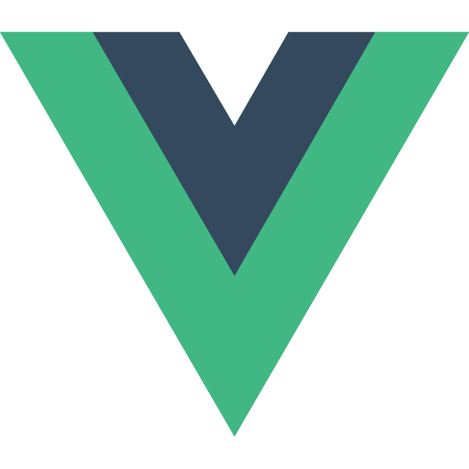
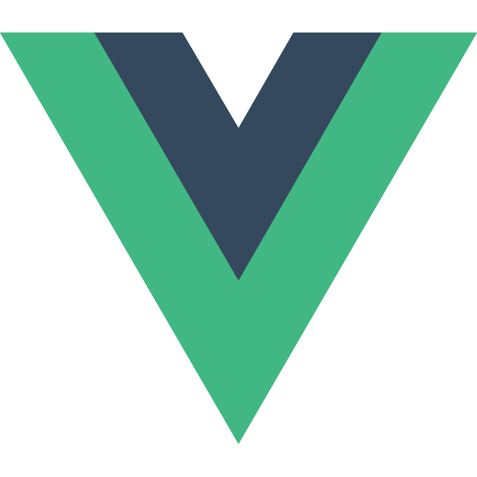
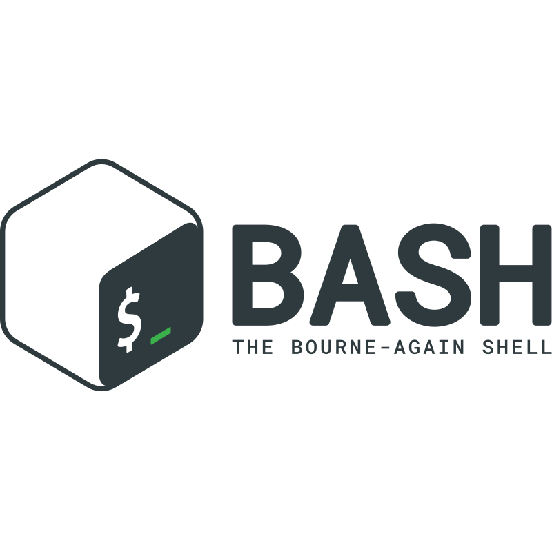
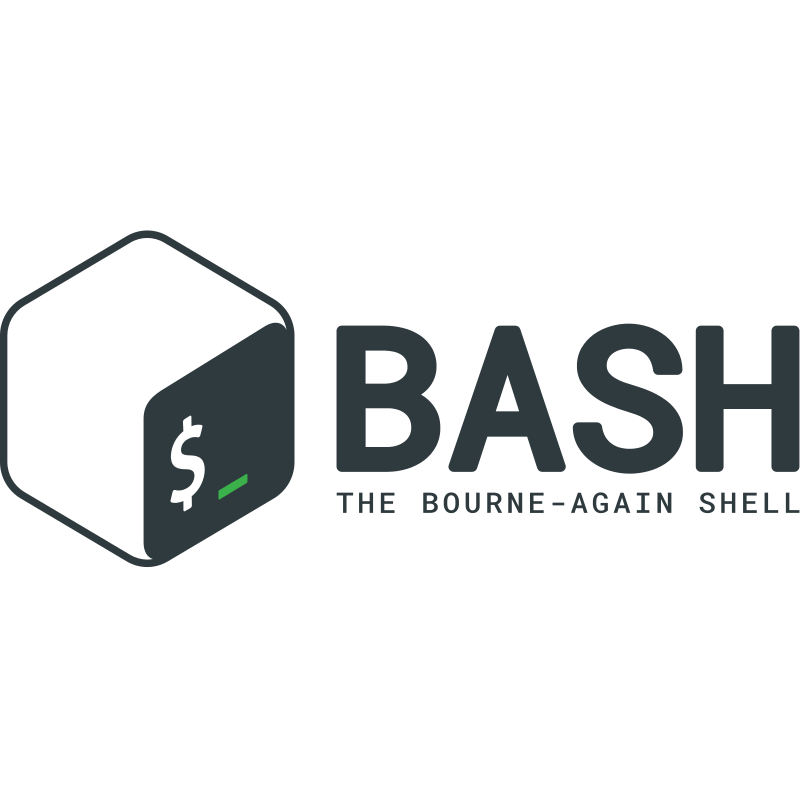

Kaíque Miceli
Full Stack Developer
Kaíque Miceli
Full Stack Developer


 



 


Natural de São Carlos, tenho 38 anos.
Trabalho com TI desde os 16 anos na área de manutenção de equipamentos. Depois
comecei a trabalhar com desenvolvimento de websites pessoais e de pequenos negócios.
Iniciei recentemente uma graduação em Sistemas de Informação.
Estou agora focado nas novas tendências, me aprimorando também em back end para me tornar
um excelente developer full stack.
Tenho conhecimento em consumo e desenvolvimento de API's, versionamento, manipulação de arquivos e já estou familiarizado com metodologias ágeis como (Kanban e Scrum).